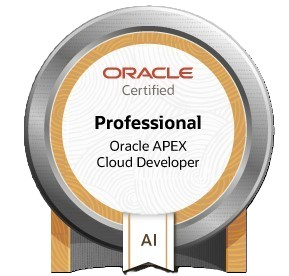

APEX Anwendungen
Business Apps
Ich entwickle Anwendungen nah am operativen Alltag: Oberflächen, Datenmodelle, Validierungen, Workflows und Integrationen.
Vita
Mein beruflicher Weg begann in der Gastronomie und führte über Einkauf, Prozessverantwortung und Projektarbeit in die Softwareentwicklung. Diese Stationen sind für mich kein Bruch, sondern ein Fundament.
Entwicklerprofil
APEX Anwendungen
Ich entwickle Anwendungen nah am operativen Alltag: Oberflächen, Datenmodelle, Validierungen, Workflows und Integrationen.
Daten & Oracle
Oracle APEX, PL/SQL, REST Data Sources und Oracle DB sind mein aktueller Schwerpunkt in der täglichen Entwicklung.
Lieferung & Betrieb
Scrum, Product Ownership, PRINCE2 und ITIL helfen mir, Anforderungen, Umsetzung und Betrieb zusammenzudenken.
Stationen
Neufahrn bei Freising. Entwicklung mit Oracle APEX, PL/SQL, JavaScript, HTML, CSS, REST Data Sources, RESTful Services und Oracle DB.
Praxis mit Java, SQL, Datenbanken, Git, Kanban, Confluence, Jira, Vaadin, MVC, Spring Framework, Spring Boot und UML.
Schwerpunkte: OOP, Software-Entwurfsmuster, Java, SQL, Datenbanken, agile Methoden, DBMS, HTML, CSS und Microsoft SQL Server.
Purchasing Agent und Purchasing Supervisor mit Verantwortung für Beschaffung, Abstimmung, operative Abläufe und verlässliche Prozesse.
Ausbildung zum Koch, Commis de Cuisine, Demi Chef de Partie, Chef de Partie und Food and Beverage Trainee.
Zertifikate
Credential Stack
Oracle-Entwicklung, agile Projektarbeit, IT-Service-Verständnis und formale Anwendungsentwicklung als belastbare Grundlage für Business-nahe Software.


Oracle University · Professional

WBS Training · IHK-Kontext

GFN · Scrum Master & Product Owner

GFN · PRINCE2 Projektleitung

GFN · ITIL Foundation
Kontakt